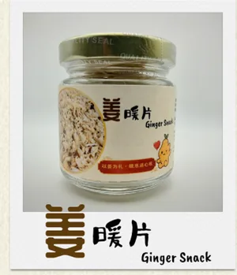
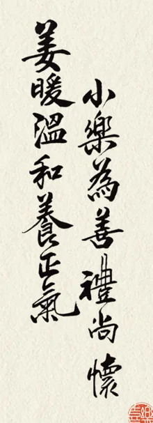
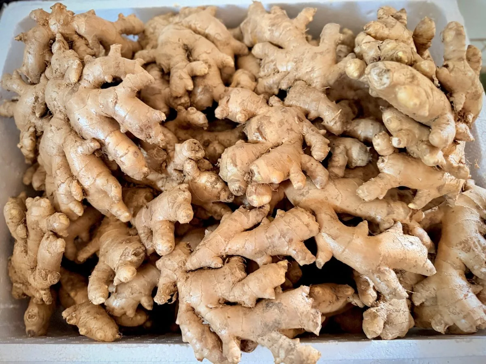
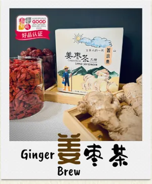
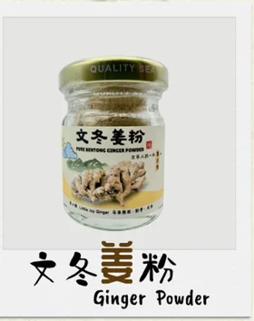
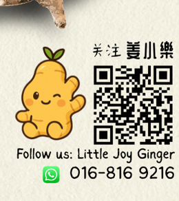

OUR STORY
在彭亨州文冬，姜，不只是食材，也是一份心意。
这里多为广西人，素来重姜。无论入菜或调养，姜都是日常里不可少的一味。
文冬姜，特别在于纤维细、多汁，辛辣之余不缺香气，常被用来暖身驱寒。
旧时，大家以姜相赠，给产后、受寒，或需要调养的人。姜，不贵重，却很实在。
以姜为礼，暖身，也暖人。
姜小樂 想把这份简单的心意，慢慢带回日常。
BENTONG · PAHANG · MALAYSIA
姜小樂想把这份简单的心意，慢慢带回日常。
来自文冬，以文冬姜为核心，把熟悉的姜香做成日常茶饮、零食与有温度的伴手礼。
好事姜至 · 万事皆樂


OUR STORY
这里多为广西人，素来重姜。无论入菜或调养，姜都是日常里不可少的一味。
文冬姜，特别在于纤维细、多汁，辛辣之余不缺香气，常被用来暖身驱寒。
旧时，大家以姜相赠，给产后、受寒，或需要调养的人。姜，不贵重，却很实在。
以姜为礼，暖身，也暖人。
姜小樂 想把这份简单的心意，慢慢带回日常。
BENTONG GINGER
真实的文冬姜，是姜小樂所有产品的起点。我们希望网站也保留这种真实感：少一点装饰，多一点原料、产品与地方的本来样子。
OUR PRODUCTS
先认识姜小樂的三款代表产品；其他产品与礼盒可直接 WhatsApp 询问。



